Configuring OAuth is a two-step process. First you configure Microsoft Services to know about Gemini. Then you configure Gemini to use these services.
Navigate to the Azure Portal and login (at the time of writing, this was Portal.Azure dotcom).
On the menu of services, select Azure Active Directory.
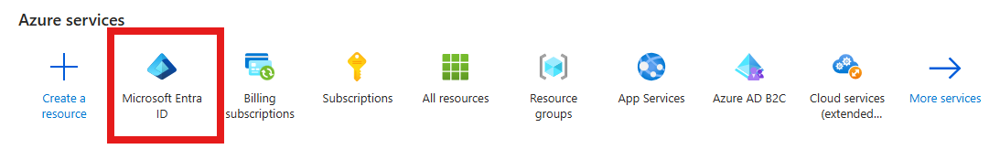
Select Azure App Registrations
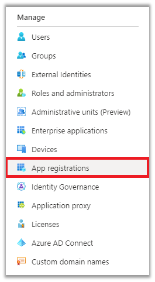
If this is the first time you are setting this up, add a new application registration.
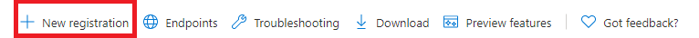
Give your application a name e.g. Gemini Email Connector. Choose the access level (defaults will suffice for 99% of users). Do not specify a Redirect URI.
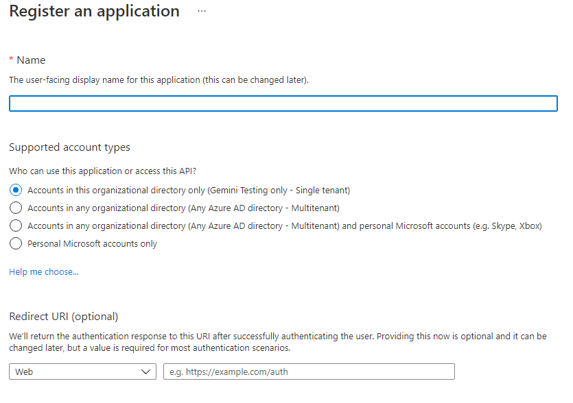
Click Register
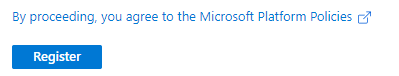
On registering your application there are 2 values that are applied to it that are essential.
Note these, you will use them to configure Gemini later.
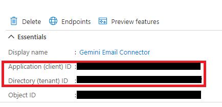
Select authentication from the menu
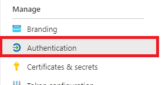
Add a platform and select Web application from the list of choices.
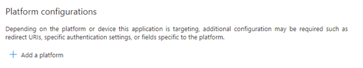
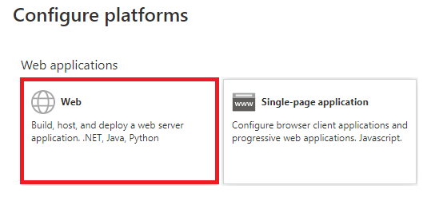
Enter the Redirect URI. This will be in the format https://yourServer.com/Admin/OAuthCallback, where yourServer.com is the url of your Gemini instance.
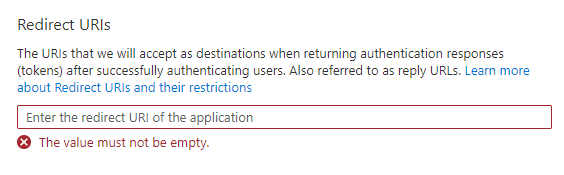
NoteYour Gemini site must be hosted on an SSL connection (https) as http redirects are not permitted.
Click Configure
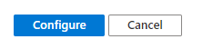
Select Certificates & secrets
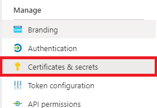
Create a new client secret
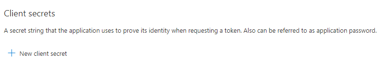
NoteIf you wish to use a certificate instead, please refer to the Microsoft documentation on the subject.
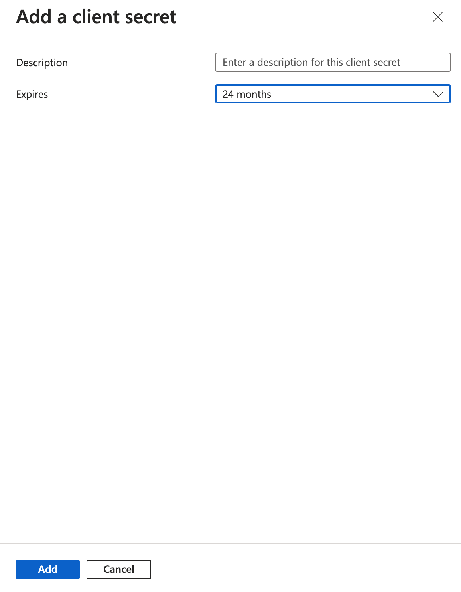
Enter a secret that will be encoded when you click "Add"
NoteWe recommend you do not set your secrets to expire, so Gemini does not suddenly stop working with email.
NoteCopy the encoded secret immediately! It cannot be seen again anywhere in the portal.
To use OAuth with Gemini mailboxes, you can choose to configure the connection as Exchange(EWS) or IMAP
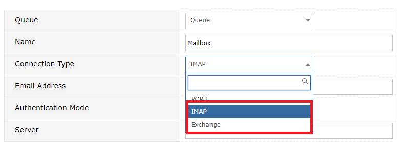
Specify OAuth2 as the Authentication Mode
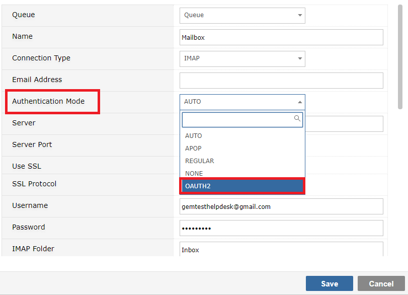
When you do this you will be prompted for an OAuth Provider. At present, only Microsoft is available, but others will soon be added.
You must use SSL and we recommend you leave the SSL protocol as Auto so Gemini can select the most modern.
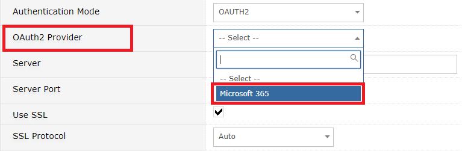
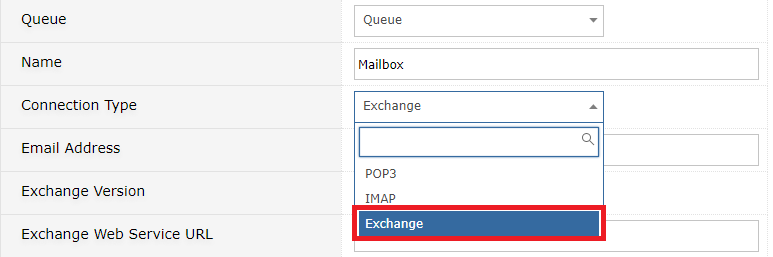
Selecting Exchange will require you to select the Exchange version. Select Office365_OAuth.
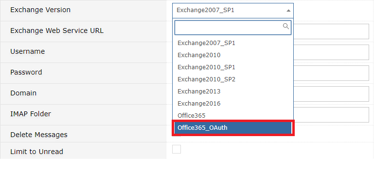
The Exchange Web Server URL will be defaulted for you. The domain is likely to remain empty for O365 and OAuth
4 new fields have been added to Gemini's Mailbox/SMTP configuration
Save your configuration when you have provided the mandatory details. You will be redirected and required to authenticate with your OAuth provider
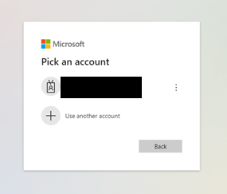
Confirm the access permissions and you'll be returned to Gemini, where you should see a success message
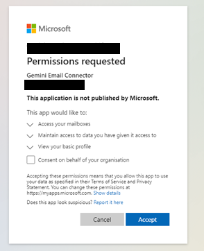
OAuth configuration is the same for both the generic system mailbox in System Email Options, and the SMTP mailbox(es) for Breeze Ticketing
Navigate to Ticketing...SMTP Servers and edit or add a new SMTP connection
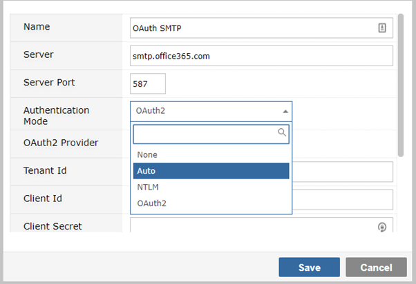
Provide a name for your SMTP Server. For Microsoft OAuth, the server and port should be as shown above.
Select OAuth2 from the Authentication Modes drop down. You will see the form present new fields.
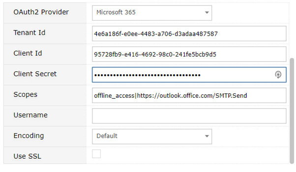
The scopes will be automatically populated, but complete the rest of the fields as per the Azure AD Application details created earlier.
Save the configuration. On Ticketing SMTP servers you should get a simple success message. On System Email Options, you will get a verbose trail of Gemini testing the SMTP connection.